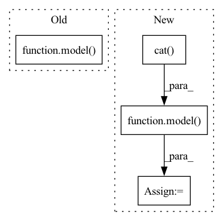

Pattern ID :35833

Before Change
labels_s = labels_s.cuda()
// compute output
y_s, f_s = model(x_s)
cls_loss = F.cross_entropy(y_s, labels_s)
_, f_t = model(x_t)
transfer_loss = domain_adv(f_s, f_t)
domain_acc = domain_adv.domain_discriminator_accuracy
After Change
labels_s = labels_s.cuda()
// compute output
x = torch.cat((x_s, x_t), dim=0)
y, f = model(x)
y_s, y_t = y.chunk(2, dim=0)
f_s, f_t = f.chunk(2, dim=0)
cls_loss = F.cross_entropy(y_s, labels_s)
In pattern: SUPERPATTERN
Frequency: 4
Non-data size: 4
Instances
Fragment ID: 101864886
Project Name: thuml/transfer-learning-library
Commit Name: 8a382eb0c50730962511d2b1ef80d1f05db3457a
Time: 2020-04-01
Author: JiangJunguang1123@outlook.com
File Name: examples/dann.py
M Class Name: AnonimousClass
N Class Name: AnonimousClass
M Method Name: train(8)
N Method Name: train(8)
M Parent Class:
N Parent Class:
M File Name: examples/dann.py
N File Name: examples/dann.py
M Start Line: 130
M End Line: 138
N Start Line: 127
N End Line: 135
'>
Before Change
labels_s = labels_s.cuda()
// compute output
y_s, f_s = model(x_s)
cls_loss = F.cross_entropy(y_s, labels_s)
y_t, f_t = model(x_t)
transfer_loss = domain_adv(y_s, f_s, y_t, f_t)
domain_acc = domain_adv.domain_discriminator_accuracy
After Change
labels_s = labels_s.cuda()
// compute output
x = torch.cat((x_s, x_t), dim=0)
y, f = model(x)
y_s, y_t = y.chunk(2, dim=0)
f_s, f_t = f.chunk(2, dim=0)
cls_loss = F.cross_entropy(y_s, labels_s)
'>
Fragment ID: 101864887
Project Name: thuml/transfer-learning-library
Commit Name: 8a382eb0c50730962511d2b1ef80d1f05db3457a
Time: 2020-04-01
Author: JiangJunguang1123@outlook.com
File Name: examples/cdan.py
M Class Name: AnonimousClass
N Class Name: AnonimousClass
M Method Name: train(8)
N Method Name: train(8)
M Parent Class:
N Parent Class:
M File Name: examples/cdan.py
N File Name: examples/cdan.py
M Start Line: 138
M End Line: 145
N Start Line: 136
N End Line: 144
'>
Before Change
data_time.update(time.time() - end_time)
targets = targets.to(device, non_blocking=True)
outputs = model(inputs)
loss = criterion(outputs, targets)
acc = calculate_accuracy(outputs, targets)
losses.update(loss.item(), inputs.size(0))
After Change
rpn_inputs = inputs.transpose(1,2).contiguous().view(N*T,C,H,W)
with torch.no_grad():
proposals = rpn(rpn_inputs)
proposals = torch.cat((proposals)).view(N,T,10,4)
outputs = model(inputs, proposals)
loss = criterion(outputs, targets)
acc = calculate_accuracy(outputs, targets)
losses.update(loss.item(), inputs.size(0))
'>
Fragment ID: 101864884
Project Name: jd730/strg
Commit Name: d10d7f32b949df4088e04b7571e91c54e4602b12
Time: 2020-06-10
Author: jdhwang730@gmail.com
File Name: training.py
M Class Name: AnonimousClass
N Class Name: AnonimousClass
M Method Name: train_epoch(12)
N Method Name: train_epoch(11)
M Parent Class:
N Parent Class:
M File Name: training.py
N File Name: training.py
M Start Line: 37
M End Line: 37
N Start Line: 24
N End Line: 46
'>
Before Change
label = label.to(device)
optimizer.zero_grad()
out = model(feature, adjs)
loss = F.nll_loss(out, label)
loss.backward()
optimizer.step()
// w1.tick("train")
After Change
adjs = [adj.to(device) for adj in adjs]
feature, order0 = feature
label, order1 = label
feature = torch.cat([f.to(device) for f in feature])
label = torch.cat([l.to(device) for l in label])
origin_feature = torch.empty_like(feature)
origin_label = torch.empty_like(label)
origin_feature[order0] = feature
origin_label[order1] = label
optimizer.zero_grad()
out = model(origin_feature, adjs)
loss = F.nll_loss(out, origin_label)
loss.backward()
optimizer.step()
// w1.tick("train")
'>
Fragment ID: 101864892
Project Name: quiver-team/torch-quiver
Commit Name: 65f91d88d6566ecac41b4ab502f409731c4c843a
Time: 2021-03-02
Author: 41138939+ZenoTan@users.noreply.github.com
File Name: benchmarks/ogbn_products_sage/dist_sampling.py
M Class Name: AnonimousClass
N Class Name: AnonimousClass
M Method Name: train(1)
N Method Name: train(1)
M Parent Class:
N Parent Class:
M File Name: benchmarks/ogbn_products_sage/dist_sampling.py
N File Name: benchmarks/ogbn_products_sage/dist_sampling.py
M Start Line: 162
M End Line: 181
N Start Line: 168
N End Line: 193